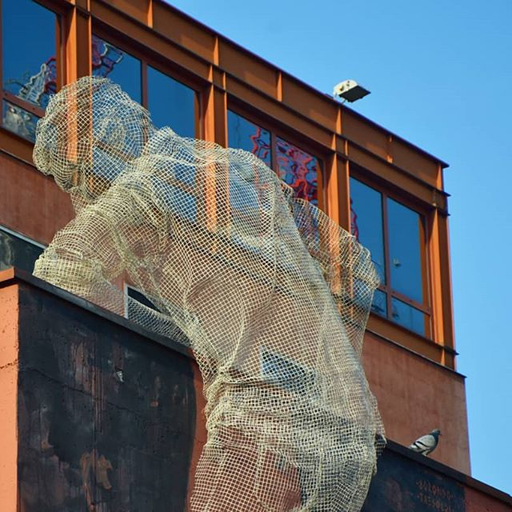

Research

"It gets easier… Every day it gets a little easier…
But you gotta do it every day - that’s the hard part.
But it does get easier."
BJH - S2 finale
Publications
"Tiefe Brunnen muss man graben
wenn man klares Wasser will
Rosenrot oh Rosenrot
Tiefe Wasser sind nicht still"
Rosenrot - Rammstein
Statistical Methodology
-
Sottosanti, A., Risso, D., and Denti, F.
Spatially Regularized Gaussian Mixtures for Clustering Spatial Transcriptomic Data
Journal of Classification, 2025 - [Journal Article - Preprint - GitHub] -
Fasano, A. and Denti, F.
Multivariate Gaussian cumulative distribution functions as the marginal likelihood of their dual Bayesian probit models
Biometrika, 2025 - [Journal Article - Postprint - GitHub] -
Denti, F. and D’Angelo, L.
The Generalized Nested Common Atoms Model
Econometrics and Statistics, 2025 - [Journal Article - Preprint - GitHub] -
Sottosanti, A., Denti, F., Galimberti, S., Risso, D., and Capitoli, G.
Spatially informed non-negative matrix tri-factorization for co-clustering mass spectrometry data
Biometrical Journal, 2024 - [Journal Article - GitHub] -
D’Angelo, L. and Denti, F.
A finite-infinite shared atoms nested model for the Bayesian nonparametric analysis of large data sets
Bayesian Analysis, 2024 - [Journal Article - Preprint - GitHub] -
Benedetti, L., Boniardi, E., Chiani, L., Ghirri, J., Mastropietro, M., Cappozzo, A., and Denti, F.
Variational Inference for Semiparametric Bayesian Novelty Detection in Large Datasets
Advances in Data Analysis and Classification, 2023 - [Journal Article - Preprint - GitHub] -
Varghese, A., Santos-Fernandez E., Denti, F., Mira, A., and Mergensen, K.
A global perspective on the intrinsic dimensionality of COVID-19 data
Scientific Reports, 2023 - [Journal Article- Preprint - GitHub] -
Denti, F., Peluso, S., Guindani, M., and Mira, A.
Multiple hypothesis screening using mixtures of non-local distributions
Statistics in Medicine, 2023 - [Journal Article - Preprint - GitHub] -
Denti, F.
intRinsic: an R package for model-based estimation of the intrinsic dimension of a dataset
Journal of Statistical Software, 2023 - [Journal Article - Preprint - GitHub] -
Denti, F., Azevedo, R., Lo, C., Wheeler, D. G., Gandhi, S.P., Guindani, M., and Shahbaba, B.
A Horseshoe mixture model for Bayesian screening with an application to light sheet fluorescence microscopy in brain imaging
Annals of Applied Statistics, 2023 - [Journal Article - Preprint - GitHub] -
Denti, F., Doimo, D., Laio, A., and Mira, A.
Gride: a novel likelihood-based intrinsic dimension estimator
Scientific Reports, 2022 - [Journal Article - Preprint - GitHub] -
Santos-Fernandez, E., Denti, F., Mengersen, K., and Mira A.
The role of intrinsic dimension in high-resolution player tracking data – Insights in basketball
Annals of Applied Statistics, 2021 - [Journal Article - Preprint - GitHub] -
Denti, F., Camerlenghi, F., Guindani, M., and Mira, A.
A Common Atom Model for the Bayesian Nonparametric Analysis of Nested Data
Journal of the American Statistical Association, 2021 - [Journal Article - Preprint - GitHub] -
Denti, F., Cappozzo, A., and Greselin, F.
A Two-Stage Bayesian Semiparametric Model for Novelty Detection with Robust Prior Information
Statistics and Computing, 2021 - [Journal Article - Preprint - GitHub] -
Allegra, M., Facco, E., Denti, F., Laio, A., and Mira, A.
Data segmentation based on the local intrinsic dimension
Scientific Reports, 2020 - [Journal Article - Preprint - GitHub] -
Denti, F., Guindani, M., Leisen, F., Lioji, A., and Vannucci, M.
Two-group Poisson-Dirichlet mixtures for multiple testing
Biometrics, 2020 - [Journal Article - Preprint - GitHub]
Collaborative Papers
-
Migliavada, R., Ricci, F. Z., Denti, F., Haghverdian, D., and Torri, L.
Is purchasing of vegetable dishes affected by organic or local labels? Empirical evidence from a university canteen
Appetite, 2022 - [Journal Article] -
Petazzoni, M., De Giacinto, E., Troiano, D., Denti, F., and Buiatti, M.
Computed Tomographic Trochlear Depth Measurement in Normal Dogs
Journal of Veterinary and Comparative Orthopaedics and Traumatology, 2018 - [Journal Article]
"Il testo che avrei voluto scrivere non è di certo questo
Perciò dovrò continuare a scrivere perché di certo riesco
(Prima o poi)"
Michele Salvemini
Book Chapters
-
Denti, F., Balocchi C., and Capitoli, G.
Segmenting brain MALDI-MSI data under separate exchangeability
(Proceeding of the BAYSM 2024 conference accepted in the New Trends in Bayesian Statistics Volume) -
Caponera, A., Denti, F., Rigon, T., Sottosanti, A., and Gelfand, A. Hierarchical Spatio-Temporal Modeling of Resting State fMRI Data
in Studies in Neural Data Science (Canale, A., Durante, D., Paci, L., Scarpa, B., editors), 2018 - [Book Chapter]
Discussions
-
Denti, F. and Rizzelli, S.
Contributed Discussion on “Sparse Bayesian factor analysis when the number of factors is unknown”
Bayesian Analysis, 2024 - [Journal Article]
Conference Proceedings
-
Capitoli, G., Denti, V., Balocchi C., and Denti, F.
Bayesian Biclustering on a Renal Cell Carcinoma Tissue Section
in Alessio Pollice, Paolo Mariani (Editors) Methodological and Applied Statistics and Demography II - SIS 2024, Short Papers, Solicited Sessions. Springer - [Proceeding] -
D’Angelo, L., and Denti, F.
Bayesian analysis of Amazon’s best-selling books via finite nested mixture models (pp. 1117-1120) -
Di Noia, A., Denti, F., and Mira, A.
A tool for assessing weak identifiability of statistical models, (pp. 1230-1234) -
Denti, F., Di Noia, A., and Mira, A.
Bayesian nonparametric estimation of heterogeneous intrinsic dimension via product partition models, (pp. 316-321) -
Capitoli, G., Colombara, S., Cotroneo, A., De Caro, F., Morandi, R., Schembri, C., Zapiola, A.G., and Denti, F.
Detecting latent spatial patterns in mass spectrometry brain imaging data via Bayesian mixtures, (pp. 1127-1132) -
Denti, F., D’Angelo, L., and Guindani, M.
Bayesian approaches for capturing the heterogeneity of neuroimaging experiments, (pp. 17-29) -
Denti, F., Camerlenghi, F., Guindani, M., and Mira, A.
Clustering artists based on the energy distributions of their songs on Spotify via the Common Atoms Model, (pp. 121-126) -
Denti, F. and Mira, A.
A tool to validate the assumptions on ratios of nearest neighbor distances: the Consecutive Ratio Paths, (pp. 1233-1238) -
Denti, F., Cappozzo, A., and Greselin, F.
Outlier and novelty detection for Functional data: a semiparametric Bayesian approach
in Book of Short Papers of the 5th international workshop on Models and Learning for Clustering and Classification, (Ingrassia A., Punzo A., Rocci R., editors) (pp. 33-38), Ledizioni - [Proceedings] -
Denti, F., Cappozzo, A., and Greselin, F.
Bayesian nonparametric adaptive classification with robust prior information
in A. Pollice, N. Salvati, & F. Schirripa Spagnolo (a cura di), Book of Short Papers SIS 2020 (pp. 655-660). Pearson.
[Proceedings]
in F.M. Chelli, M. Ciommi, S. Ingrassia, F. Mariani, M.C. Recchioni (a cura di) Book of Short Papers SEAS IN 2023, Pearson - [Proceedings]
in A. Balzanella, M. Bini, C. Cavicchia, and R. Verde (a cura di), Book of Short Papers SIS 2022, Pearson - [Proceedings]
"Whoa, you know
to keep your hopes up high
And your head down low"
All I Want - A Day to Remember
Submitted
-
Denti, F., Balocchi, C., Denti, V., and Capitoli, G.
Multiomics Tissue Segmentation via Spatially-Informed Nested Biclustering Methods
Submitted, 2025+ - [Preprint] -
D’Angelo, L., Denti, F., Canale, A., and Guindani, M.
Decoding Neuronal Ensembles from Spatially-Referenced Calcium Traces: A Bayesian Semiparametric Approach
Submitted, 2025+ - [Preprint] -
Denti, F. and D’Angelo, L.
sanba: An R Package for Bayesian Clustering of Distributions via Shared Atoms Nested Models
Submitted, 2025+ - [Preprint - GitHub]